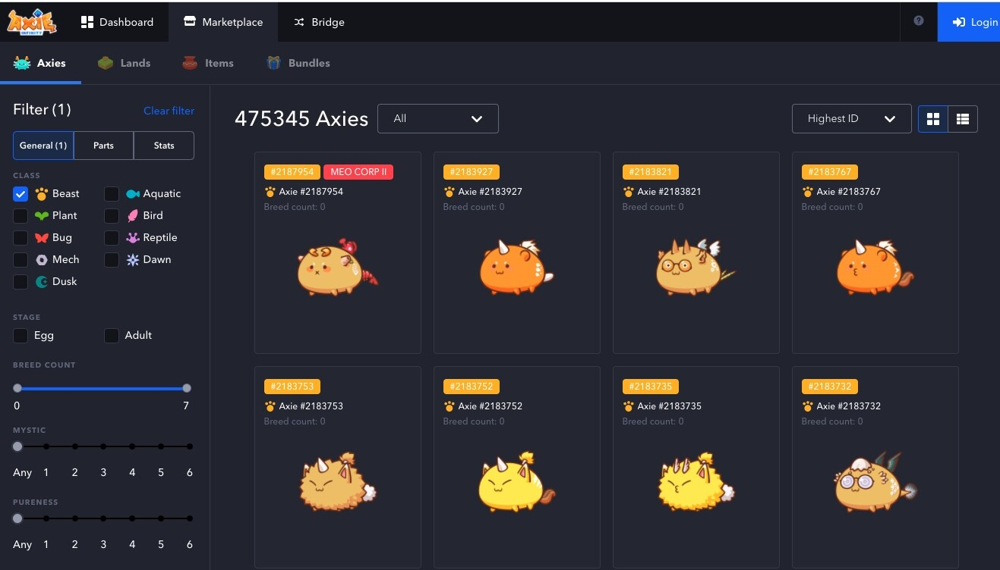

‘Axie Infinity’ es de los juegos con mayor crecimiento de ingresos de la historia: el "Pokémon de los NFT" que vende que podemos ganar dinero jugando
Hacerse con todos los Axies se antoja complicado, teniendo en cuenta que el más barato cuesta unos 200 dólares (0,1 ETH) y se han llegado a vender por más de 500.000 dólares (300 ETH). Estas criaturas virtuales, al estilo de los Pokémon, son los protagonistas de 'Axie Infinity', el último fenómeno dentro del mundo cripto y un juego que ya reúne a más de 350.000 usuarios activos diarios.'Axie Infinity' combina un modo aventura con misiones diarias, enfrentamientos con otros jugadores y recolección de monedas con la infraestructura subyacente de los NFT y la red blockchain. Un juego con una apariencia divertida y familiar que sirve como antesala para una propuesta mucho más seria y arriesgada, donde los jugadores pueden obtener dinero a cambio de jugar. "Play to earn" lo llaman. Un estilo de juego que quiere ir más allá del "Free to play" o el "pay to win".
Cómo funciona 'Axie Infinity' y cuánto cuesta entrar
Cada uno de estos Axie está ligado a un NFT. Los usuarios los compran, los crían y los intercambian. Para poder acceder al juego se tienen que comprar tres de estas criaturas, siendo la más económica la de 0,1 ETH. Esto equivale a casi 200 dólares, en función del valor actual del Ethereum.Dentro del juego se pueden conseguir otros Axies, así como realizar misiones para obtener tokens ERC20. Unas monedas virtuales con su propio valor. Son los AXS ('Axie Infinity Shards') y SLP ('Smooth Love Potion'). Y para hacernos una idea de la magnitud del juego, según datos de Coinbase, tienen una capitalización bursátil de 753,9 millones de dólares y 105,4 millones de dólares, respectivamente.
El origen del juego se remonta a 2017, donde Sky Mavis y Trung Thanh Nguyen vieron el éxito de CryptoKitties y decidieron apostar por un juego propio, al estilo Pokémon pero con los NFT que estaban ganando tanta tracción en el market de CryptoKitties.

Inicialmente el juego experimentó sus primeros momentos de éxito con el auge de las criptomonedas y Ethereum en 2018, pero no ha sido hasta 2021 cuando ha explotado, impulsado principalmente por la comunidad de Filipinas, que han visto en 'Axie Infinity' un método alternativo para generar dinero.
Con su modelo "Play to earn", 'Axie Infinity' recompensa económicamente a quienes más juegan, pero exige una elevada barrera de entrada: un pago inicial de, actualmente, unos 200 dólares por criatura.
"La queja es toda la parafernalia de wallets que tienes que hacer", nos explica uno de los jugadores. Se refiere a que para entrar en el juego hay que adquirir ETH, registrarse en MetaMask, transferir las criptomonedas y descargar Ronin, el wallet propio de 'Axie Infinity' creado para facilitar las transacciones. "Antes por cada cosa tenías que pagar comisiones porque estaba en la red de MetaMask, ahora ha mejorado infinitamente", apunta el usuario. Este paso inicial es una barrera de entrada seria, aunque una vez dentro tenemos un juego más tradicional, con gráficos de dibujo y un sistema de batalla en tiempo real basado en cartas.
El elevado coste de entrada ha provocado que algunos usuarios decidan alquilar a jugadores nuevos los Axie que "les sobran", con un coste inferior al que tendría comprar uno. Una estrategia adicional que permite generar más ingresos a los jugadores y abarata el pago inicial a los nuevos usuarios, pero también un ejemplo de la dificultad de rentabilizar el juego.
'Axie Infinity' es un juego disponible tanto para Windows, Mac, Android como iOS. Si bien, pese a que se trata de un juego de descarga gratuita, la necesaria compra de los Axies tiene un coste muy significativo. Estos Axies no se compran a los creadores del juego, sino a otros jugadores. Aquí radica la gran diferencia con otros sistemas. Según explica Packy McCormick de Not Boring, el 95% de los ingresos va a parar a los jugadores.
Si bien, pese a la promesa de que al comprar un Axie estás comprando una parte del juego, lo cierto es que en el pasado se han producido problemas como el de QuadrigaCX, donde los usuarios perdieron sus bitcoins o problemas en la misma creación del NFT, que desaparecen en el momento que el servidor de la compañía se viene abajo.
Esta promesa de obtener un trozo del pastel más grande es la base del modelo de negocio 'Play to earn' que establece 'Axie Infinity'. ¿Cómo se sustenta entonces el juego? Principalmente por la comisión del 4,25% sobre las compras y ventas de los NFT de los Axies. Mientras en juegos 'Free to Play' se paga por obtener skins u objetos especiales, en este tipo de juego se paga una cantidad mayor para poder acceder al juego, con la promesa posterior de poder aspirar a recuperar la inversión. "Se recompensa a los jugadores que pasan su tiempo en el juego y ayudan a hacer crecer el ecosistema", apuntan desde 'Axie Infinity'. Los jugadores pueden intercambiar sus recompensas dentro del juego o decidir reconvertirlo en dinero Fiat, a través de casas de intercambio como Uniswap.
.jpg)